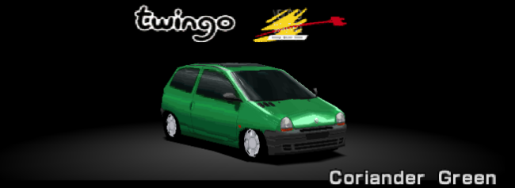
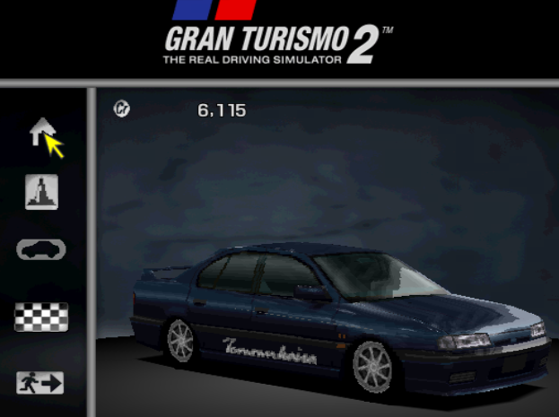
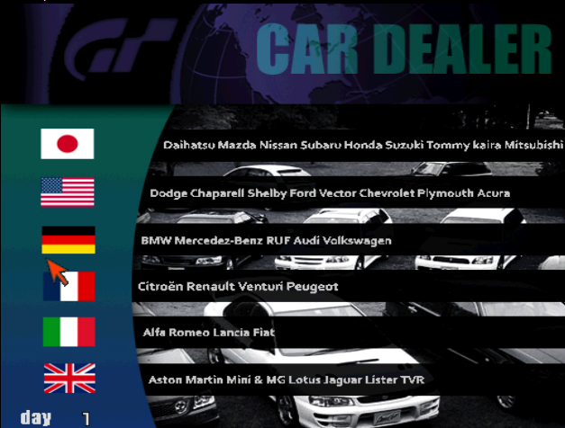

This project redesigns the original Gran Turismo 2 menus to make them look like Gran Turismo 3's whilst at the same time adding new cars and events.



GT2 Concept Test Build .xDelta Patch
Gran Turismo 2 v1.2 NTSC is required to apply this patch.
How To Patch
1. Download an xDelta patcher (such as xdeltaUI or xdelta3).
2. Run the patcher and select your Gran Turismo 2 v1.2 NTSC disc image as the source file. (Make sure to make a backup copy first!)
3. Select the provided .xdelta patch file.
4. Choose an output location and filename for the patched game.
5. Start the patching process. This may take a few moments.
6. Once complete, a new patched copy of the game will be created.
7. Load the patched game. If successful, the mod will now be applied.
##############################################################################################################################################################################################
Patch Notes
08/02/2026 - Initial test build released.
- Added new menu design inspired by Gran Turismo 3.
- Reworked the main menu.
- Added Two New Cars:
- 1996 Renault Twingo EV
- Tommykaira M204t
- Some bugs may occur such as the game taking a while to load and some graphical glitches yet to be fixed.
##############################################################################################################################################################################################
This project is a fan-made modification of Gran Turismo 2.
It is not affiliated with or endorsed by Sony Interactive Entertainment or Polyphony Digital.